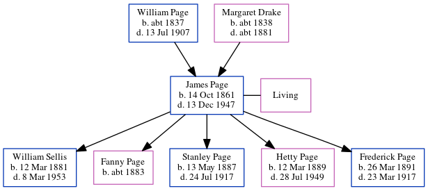

James Henry Page 1861 - 1947
[ Home ] | [ Calendar ] | [ Surnames Index ] | [ Census Index ] | [ Family History ]The child of William Page (a bricklayer) and Margaret Drake, James Page, (also known as Henry Page) the second cousin twice-removed on the father's side of Nigel Horne, was born in Folkestone, Kent, England on Oct 14, 18611,2,3, was baptized there at Parish Church of St Mary & St Eanswythe, Church St on Dec 22, 1861 and also married Elizabeth Sellis (with whom he had 5 children: William Ernest, Fanny, Stanley Wallace, Hetty Camelia and Frederick Henry) there at Parish Church of St Mary & St Eanswythe, Church St on Apr 16, 18825.
During his life, he was living at Sandfield House in Folkestone on Apr 2, 18711; and at 2 Robins Terrace, Lyminge, Kent, England in 1947.
He died on Dec 13, 1947 in Folkestone2,4 and was buried at Ss Mary & Ethelburga in Lyminge on Dec 17, 19476.
Parents
- William Richard was born c. 1837
- Margaret was born c. 1838
Children
- William Ernest was born on Mar 12, 1881
- Fanny was born c. 1883
- Stanley Wallace was born on May 13, 1887
- Hetty Camelia was born on Mar 12, 1889
- Frederick Henry was born on Mar 26, 1891
Citations
- 1871 England, Wales & Scotland Census - Findmypast (was age 9 and the son of the head of the household)
- England & Wales deaths 1837-2007 - Findmypast
- Kent Marriages And Banns - Findmypast
- England & Wales Government Probate Death Index 1858-2019 - Findmypast
- Kent Marriages And Banns - Findmypast
- Kent Burials - Findmypast
Media
Kent, Canterbury Archdeaconry marriages 1538-1928 - GBPRS/CANT/M/97002980/1
England Marriages 1538-1973 - R_848371162
England & Wales marriages 1837-2005 - BMD/M/1882/2/AZ/000220/153
England & Wales deaths 1837-2007 - BMD/D/1947/4/AZ/000726/136
Kent Burials - GBPRS/CANT/D/95384987
Kent Baptisms - GBPRS/CANT/B/96151153
England Births & Baptisms 1538-1975 - R_884242279
Family Tree
Generated by ged2site. Last updated on Jun 11, 2024